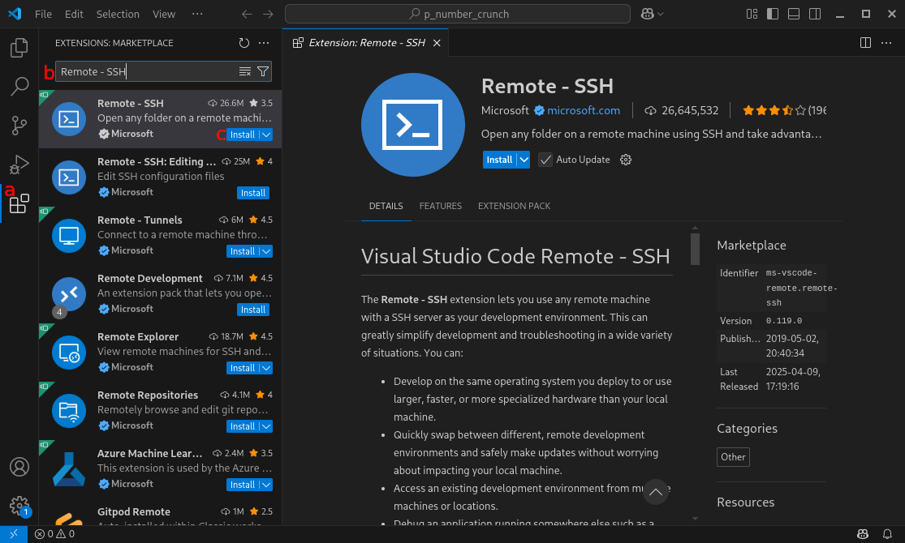
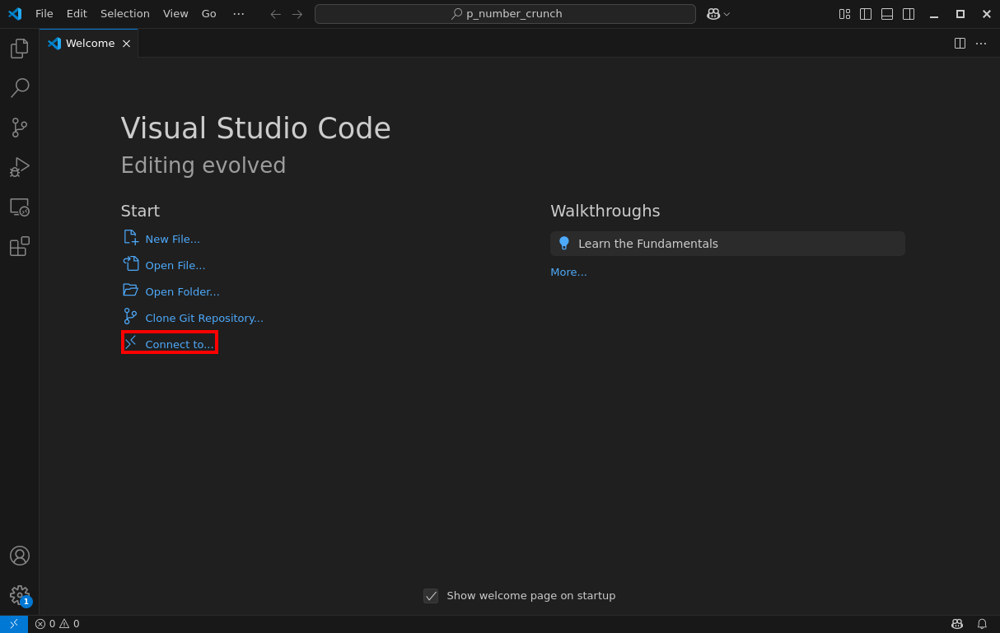
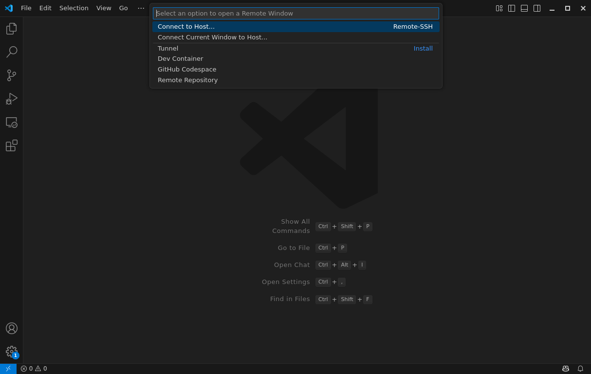
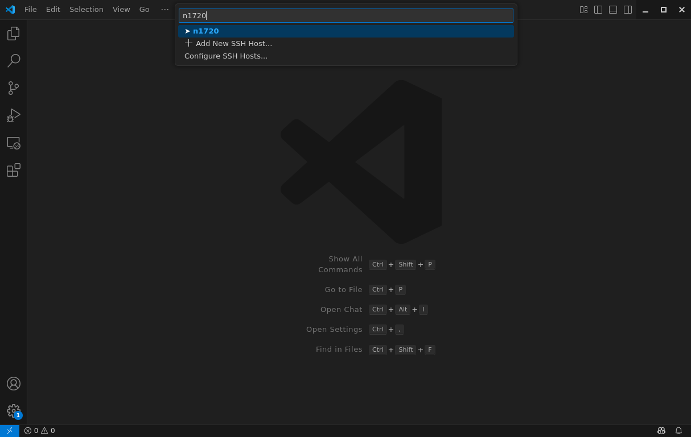
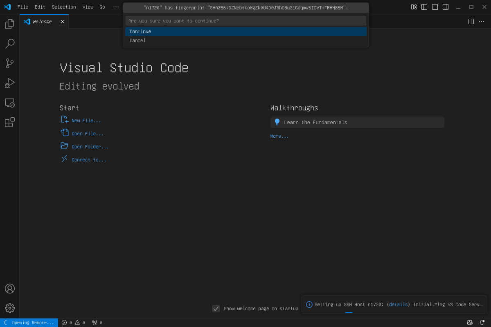
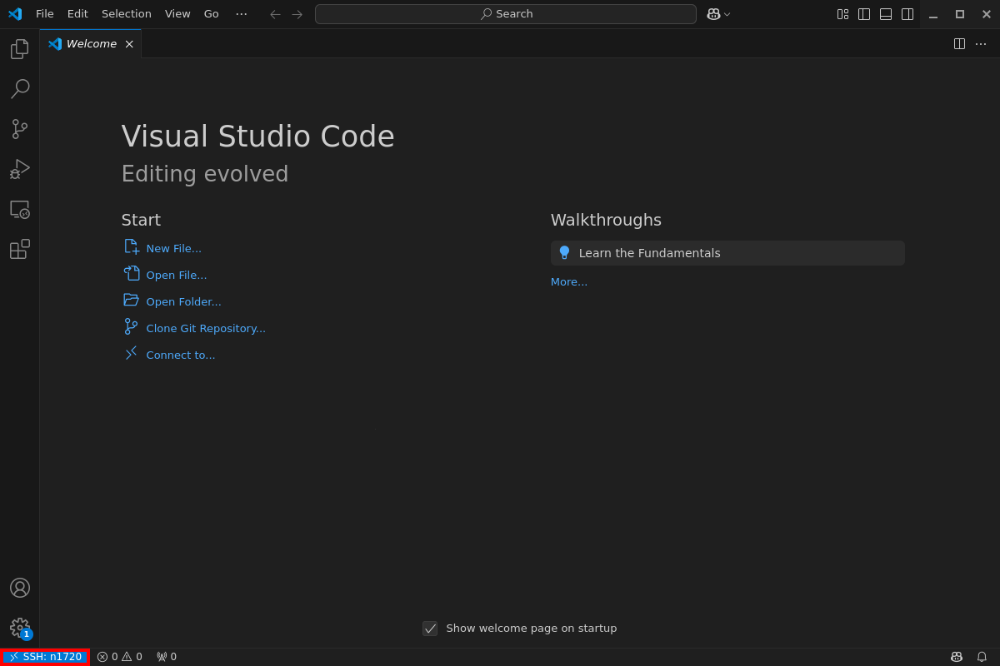

Connecting via Terminal (Linux, Mac, Windows)#
Connecting via terminal works on every operating system. For Linux and Mac operating systems no additional software is required. For users of a Windows OS a recent version of Windows is required (Windows 10, Build 1809 and higher). It is possible to use Command Prompt or PowerShell). Ensure that OpenSSH is installed on the system.
SSH establishes secure connections using authentication and encryption. The login nodes accept
the following encryption algorithms: aes128-ctr, aes192-ctr, aes256-ctr,
aes128-gcm@openssh.com, aes256-gcm@openssh.com, chacha20-poly1305@openssh.com,
chacha20-poly1305@openssh.com.
??? info “Warning message: post-quantum algorithm”
When using a recent version of OpenSSH (>= 10.2), you may see the following warning:
> ** WARNING: connection is not using a post-quantum key exchange algorithm.
> ** This session may be vulnerable to "store now, decrypt later" attacks.
> ** The server may need to be upgraded. See https://openssh.com/pq.html
You can safely ignore this message. Our cluster systems currently do not support
the post-quantum key exchange algorithms mentioned in the warning.
??? info “Troubleshooting VPN connection”
If you have problems logging in from outside the campus network, the ZIH
[FAQ and Service Catalog page](https://tu-dresden.de/zih/dienste/service-katalog/arbeitsumgebung/zugang_datennetz/vpn)
provides information on how to set up the VPN connection
and solutions to the most common issues.
Before Your First Connection#
We suggest to create an SSH key pair before you work with the ZIH systems. This ensures high connection security.
marie@local$ mkdir -p ~/.ssh
marie@local$ ssh-keygen -t ed25519 -f ~/.ssh/id_ed25519
Generating public/private ed25519 key pair.
Enter passphrase (empty for no passphrase):
Enter same passphrase again:
[...]
Type in a passphrase for the protection of your key. The passphrase should be non-empty.
Copy the public key to the ZIH system (Replace placeholder marie with your ZIH login):
marie@local$ ssh-copy-id -i ~/.ssh/ssh_host_ed25519_key.pub marie@login2.barnard.hpc.tu-dresden.de
The authenticity of host 'barnard.hpc.tu-dresden.de (141.30.73.104)' can't be established.
RSA key fingerprint is SHA256:HjpVeymTpk0rqoc8Yvyc8d9KXQ/p2K0R8TJ27aFnIL8.
Are you sure you want to continue connecting (yes/no)?
Compare the shown fingerprint with the documented fingerprints. Make sure
they match. Then you can accept by typing yes.
!!! note “One ssh-copy-id command for all clusters”
Since your home directory, where the file `.ssh/authorized_keys` is stored, is available on all HPC
systems, this task is only required once and you can freely choose a target system for the
`ssh-copy-id` command. Afterwards, you can access all clusters with this key file.
??? info “ssh-copy-id is not available”
If `ssh-copy-id` is not available, you need to do additional steps:
```console
marie@local$ scp ~/.ssh/ssh_host_ed25519_key.pub marie@login2.barnard.hpc.tu-dresden.de:
The authenticity of host 'barnard.hpc.tu-dresden.de (141.30.73.104)' can't be established.
RSA key fingerprint is SHA256:Gn4n5IX9eEvkpOGrtZzs9T9yAfJUB200bgRchchiKAQ.
Are you sure you want to continue connecting (yes/no)?
```
After that, you need to manually copy the key to the right place:
```console
marie@local$ ssh marie@login2.barnard.hpc.tu-dresden.de
[...]
marie@login.barnard$ mkdir -p ~/.ssh
marie@login.barnard$ touch ~/.ssh/authorized_keys
marie@login.barnard$ cat ssh_host_ed25519_key.pub >> ~/.ssh/authorized_keys
```
Configuring Default Parameters for SSH#
After you have copied your key to the ZIH system, you should be able to connect using:
marie@local$ ssh marie@login2.barnard.hpc.tu-dresden.de
[...]
marie@login.barnard$ exit
However, you can make this more comfortable if you prepare an SSH configuration on your local
workstation. Navigate to the subdirectory .ssh in your home directory and open the file config
(~/.ssh/config) in your favorite editor. If it does not exist, create it. Put the following lines
in it (you can omit lines starting with #):
Host barnard
#For login (shell access)
HostName login1.barnard.hpc.tu-dresden.de
#Put your ZIH-Login after keyword "User":
User marie
#Path to private key:
IdentityFile ~/.ssh/id_ed25519
#Don't try other keys if you have more:
IdentitiesOnly yes
#Enable X11 forwarding for graphical applications and compression. You don't need parameter -X and -C when invoking ssh then.
ForwardX11 yes
Compression yes
Host dataport
#For copying data without shell access
HostName dataport1.hpc.tu-dresden.de
#Put your ZIH-Login after keyword "User":
User marie
#Path to private key:
IdentityFile ~/.ssh/id_ed25519
#Don't try other keys if you have more:
IdentitiesOnly yes
Afterwards, you can connect to the ZIH system using:
marie@local$ ssh barnard
If you want to copy data from/to ZIH systems, please refer to the documentation Dataport Nodes: Transfer Data to/from ZIH’s Filesystems for more information on Dataport nodes.
!!! note “Gernalization to all HPC systems”
In the above `.ssh/config` file, the HPC system `Barnard` is chosen as an example.
The very same settings can be made for individuall or all ZIH systems, e.g. `Capella`, `Alpha`,
`Julia`, `Romeo` etc.
X11-Forwarding#
If you plan to use an application with graphical user interface (GUI), you need to enable X11-forwarding for the connection. If you use the SSH configuration described above, everything is already prepared and you can simply use:
marie@local$ ssh barnard
If you have omitted the last two lines in the default configuration above, you need to add the
option -X or -XC to your SSH command. The -C enables compression which usually improves
usability in this case:
marie@local$ ssh -XC barnard
!!! info
Also consider to use a [DCV session](desktop_cloud_visualization.md) for remote desktop
visualization at ZIH systems.
Advanced Configuration#
Working on Multiple Clusters#
If you are working on multiple clusters or regularly switch between login nodes, you do not need to add a separate entry for each login node to your SSH configuration. Instead, you can use patterns inside your SSH configuration to group multiple related entries together.
# defaults to login1 node for each cluster
# %h in HostName is replaced with the given host
Host alpha barnard romeo capella
HostName login1.%h.hpc.tu-dresden.de
User marie
IdentityFile ~/.ssh/id_ed25519
IdentitiesOnly yes
Host julia dataport1 dataport2
Hostname %h.hpc.tu-dresden.de
User marie
IdentityFile ~/.ssh/id_ed25519
IdentitiesOnly yes
# cover all login nodes
# ? in host is a placeholder for one character
# 2.barnard -> login2.barnard.hpc-tu-dresden.de
Host ?.alpha ?.barnard ?.romeo ?.capella
HostName login%h.hpc.tu-dresden.de
User marie
IdentityFile ~/.ssh/id_ed25519
IdentitiesOnly yes
Now you can reach any login node by running ssh <number>.<cluster>, where <number> is the
number of the login node and <cluster> is the name of your target cluster.
For example 2.capella will be resolved to login2.capella.hpc.tu-dresden.de.
Working on Compute Nodes#
To connect to a compute node with a running or an interactive job, you normally have to first connect to a login node and then to the desired compute node. This can be quite tedious, or is not even an option with some tools.
Luckily, you can just add an entry to your ssh-config, to connect to a compute node with a single command. With that your used application does not need to directly support ssh hops.
# Host entry to catch the ProxyCommand hosts
Host *.hpc.tu-dresden.de
User marie
IdentityFile ~/.ssh/id_ed25519
IdentitiesOnly yes
# Barnard compute nodes
Host n????
# This specifies the jump host (connection to the login node)
ProxyJump login1.barnard.hpc.tu-dresden.de
User marie
IdentityFile ~/.ssh/id_ed25519
IdentitiesOnly yes
# Alpha compute nodes
Host i80??
ProxyJump login1.alpha.hpc.tu-dresden.de
User marie
IdentityFile ~/.ssh/id_ed25519
IdentitiesOnly yes
# Capella compute nodes
Host c? c?? c???
ProxyJump login1.capella.hpc.tu-dresden.de
User marie
IdentityFile ~/.ssh/id_ed25519
IdentitiesOnly yes
# Romeo compute nodes
Host i7???
ProxyJump login1.romeo.hpc.tu-dresden.de
User marie
IdentityFile ~/.ssh/id_ed25519
IdentitiesOnly yes
Connecting via Visual Studio Code#
Some users like to use Visual Studio Code (VS-Code) to work on their projects, allowing them to run workloads on a compute node using the comfort of their local editor.
!!! warning “Please, do not run Visual Studio Code Server on login nodes.”
Due to capacity reasons, we might be forced to terminate Visual Studio Code Server sessions without prior notice.
Use compute nodes instead.
In the following example, our job runs on the Barnard compute node n1720.
Adapt your ssh-config for Working on Compute Nodes
??? info “Example: Configuration for Barnard” ```bash Host *.hpc.tu-dresden.de User marie IdentityFile ~/.ssh/id_ed25519 IdentitiesOnly yes
Host n???? ProxyJump login1.barnard.hpc.tu-dresden.de User marie IdentityFile ~/.ssh/id_ed25519 IdentitiesOnly yes ```
Install the Remote SSH extension.
Select Extensions on the sidebar on the left or press
Ctrl+Shift+X.Type
Remote - SSHinto the search bar.Click the
Installbutton on theRemote - SSHextension.

{.align-center}Start your interactive job.
Once your job has been allocated, make sure to down the hostname and fingerprint.
marie@n1720$ hostname n1720 marie@n1720$ ssh-keygen -l -f /etc/ssh/ssh_host_ed25519_key.pub 256 SHA256:CxLv2qYktKNkK11p5l8t9Rho8VL+mV9oPMKpgKASUPY no comment (ECDSA)
Click the
Connect to...button or pressCtrl+Alt+O
{.align-center}Select
Connect to Host.
{.align-center}Enter the hostname of your compute node (in our example that is
n1720).
{.align-center}Validate the fingerprint for the compute node with the one you wrote down earlier and click
Continue.
{.align-center}Verify that you are connected by checking the indicator in the lower left corner (
SSH: <nodename>)
{.align-center}
Further information can be found in the official VS-Code documentation on Remote Development using SSH.